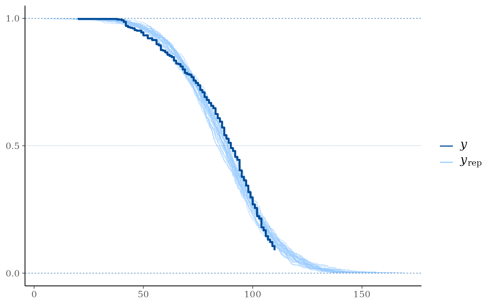

Compare the empirical distribution of censored data y to the
distributions of simulated/replicated data yrep from the posterior
predictive distribution. See the Plot Descriptions section, below, for
details.
Although some of the other bayesplot plots can be used with censored
data, ppc_km_overlay() is currently the only plotting function designed
specifically for censored data. We encourage you to suggest or contribute
additional plots at
github.com/stan-dev/bayesplot.
Usage
ppc_km_overlay(
y,
yrep,
...,
status_y,
left_truncation_y = NULL,
extrapolation_factor = 1.2,
size = 0.25,
alpha = 0.7
)
ppc_km_overlay_grouped(
y,
yrep,
group,
...,
status_y,
left_truncation_y = NULL,
extrapolation_factor = 1.2,
size = 0.25,
alpha = 0.7
)Arguments
- y
A vector of observations. See Details.
- yrep
An
SbyNmatrix of draws from the posterior (or prior) predictive distribution. The number of rows,S, is the size of the posterior (or prior) sample used to generateyrep. The number of columns,Nis the number of predicted observations (length(y)). The columns ofyrepshould be in the same order as the data points inyfor the plots to make sense. See the Details and Plot Descriptions sections for additional advice specific to particular plots.- ...
Currently only used internally.
- status_y
The status indicator for the observations from
y. This must be a numeric vector of the same length asywith values in {0, 1} (0 = right censored, 1 = event).- left_truncation_y
Optional parameter that specifies left-truncation (delayed entry) times for the observations from
y. This must be a numeric vector of the same length asy. IfNULL(default), no left-truncation is assumed.- extrapolation_factor
A numeric value (>=1) that controls how far the plot is extended beyond the largest observed value in
y. The default value is 1.2, which corresponds to 20 % extrapolation. Note that all posterior predictive draws may not be shown by default because of the controlled extrapolation. To display all posterior predictive draws, setextrapolation_factor = Inf.- size, alpha
Passed to the appropriate geom to control the appearance of the
yrepdistributions.- group
A grouping variable of the same length as
y. Will be coerced to factor if not already a factor. Each value ingroupis interpreted as the group level pertaining to the corresponding observation.
Plot Descriptions
ppc_km_overlay()Empirical CCDF estimates of each dataset (row) in
yrepare overlaid, with the Kaplan-Meier estimate (Kaplan and Meier, 1958) foryitself on top (and in a darker shade). This is a PPC suitable for right-censoredy. Note that the replicated data fromyrepis assumed to be uncensored. Left truncation (delayed entry) times forycan be specified usingleft_truncation_y.ppc_km_overlay_grouped()The same as
ppc_km_overlay(), but with separate facets bygroup.
References
Gelman, A., Carlin, J. B., Stern, H. S., Dunson, D. B., Vehtari, A., and Rubin, D. B. (2013). Bayesian Data Analysis. Chapman & Hall/CRC Press, London, third edition. (Ch. 6)
Kaplan, E. L. and Meier, P. (1958). Nonparametric estimation from incomplete observations. Journal of the American Statistical Association. 53(282), 457–481. doi:10.1080/01621459.1958.10501452.
Examples
# \donttest{
color_scheme_set("brightblue")
# For illustrative purposes, (right-)censor values y > 110:
y <- example_y_data()
status_y <- as.numeric(y <= 110)
y <- pmin(y, 110)
# In reality, the replicated data (yrep) would be obtained from a
# model which takes the censoring of y properly into account. Here,
# for illustrative purposes, we simply use example_yrep_draws():
yrep <- example_yrep_draws()
dim(yrep)
#> [1] 500 434
# Overlay 25 curves
ppc_km_overlay(y, yrep[1:25, ], status_y = status_y)
#> Note: `extrapolation_factor` now defaults to 1.2 (20%).
#> To display all posterior predictive draws, set `extrapolation_factor = Inf`.
# With extrapolation_factor = 1 (no extrapolation)
ppc_km_overlay(y, yrep[1:25, ], status_y = status_y, extrapolation_factor = 1)
# With extrapolation_factor = Inf (show all posterior predictive draws)
ppc_km_overlay(y, yrep[1:25, ], status_y = status_y, extrapolation_factor = Inf)

# With separate facets by group:
group <- example_group_data()
ppc_km_overlay_grouped(y, yrep[1:25, ], group = group, status_y = status_y)
#> Note: `extrapolation_factor` now defaults to 1.2 (20%).
#> To display all posterior predictive draws, set `extrapolation_factor = Inf`.
# With left-truncation (delayed entry) times:
min_vals <- pmin(y, apply(yrep, 2, min))
left_truncation_y <- rep(0, length(y))
condition <- y > mean(y) / 2
left_truncation_y[condition] <- pmin(
runif(sum(condition), min = 0.6, max = 0.99) * y[condition],
min_vals[condition] - 0.001
)
ppc_km_overlay(y, yrep[1:25, ], status_y = status_y,
left_truncation_y = left_truncation_y)
#> Note: `extrapolation_factor` now defaults to 1.2 (20%).
#> To display all posterior predictive draws, set `extrapolation_factor = Inf`.
# }